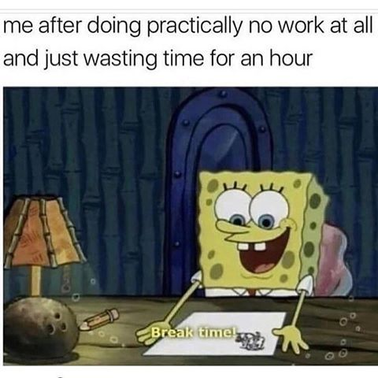

⛿ TIPS AND KNOWLEDGES :
⇨ How to Cope with Procrastination?
⇨ How to Recognize A Straw Man Logical Fallacy?
|
How to Cope with Procrastination?
October 9, 2020

What is It?
In a nutshell, you procrastinate when you put off things that you should be focusing on right
now, usually in favor of doing something that is more enjoyable or that you’re more comfortable
doing. Procrastination is occurring when there’s a significant time period between
when people intend to do a job, and when they actually do it.
How to Tackle It Down?
- Step 1 : Recognize that You're Procrastinating
If you're honest with yourself, you probably know when you're procrastinating. But here are some useful indicators that will help you know when you’re procrastinating:
- Filling your day with low priority tasks from your To Do List.
- Sitting down to start a high-priority task, and almost immediately going off to make a cup of coffee.
- Leaving an item on your To Do list for a long time, even though you know it's important.
- Regularly saying "Yes" to unimportant tasks that others ask you to do, and filling your time with these instead of getting on with the important tasks already on your list.
- Waiting for the “right mood” or the “right time” to tackle the important task at hand.
| NOTE : If you have a genuine good reason for rescheduling
something important, then you’re not necessarily procrastinating. But if you’re simply “making an
excuse” because you really just don’t want to do it, then you are. |
- Step 2: Figure Out WHY You're Procrastinating
Why you procrastinate can depend on both you and the task. So it's necessary to understand
which of the two is relevant in a given situation, so that you can select the best approach for
overcoming your reluctance to get going. Here are some reason why people procrastinate :
- People find a particular job unpleasant, and try to avoid it
because of that. Most jobs have unpleasant or boring aspects to them, and often the best way of
dealing with these is to get them over and done with quickly, so that you can focus on the more
enjoyable aspects of the job.
- People are disorganized. Organized people manage to fend of the
temptation to procrastinate, because they will have things like prioritized to-do lists and
schedules which emphasize how important the piece work is, and identify precisely when it’s
due.
- You can feel overwhelmed by the task. You may doubt that you have
the skills or resources you think you need, so you seek comfort in doing tasks you know you're
capable of completing. Unfortunately, the big task isn't going to go away – truly important tasks
rarely do.
- Surprisingly, perfectionists are often procrastinators, as they can tend to think "I don't have the
right skills or resources to do this perfectly now, so I won't do it at all."
- One final major cause of procrastination is having underdeveloped decision-making skills. If
you simply can’t decide what to do, you’re likely to put off taking action in case you do the
wrong thing.
- Step 3: Adopt Anti-Procrastination Strategies
Procrastination is a habit – a deeply ingrained pattern of behavior. That means that you won’t
just break it overnight. Habits only stop being habits when you have persistently stopped
practising them, so use as many approaches as possible to maximize your chances of beating
procrastination. Some tips will work better for some people than for others, and for some tasks
than others. And, sometimes, you may simply need to try a fresh approach to beat the
“procrastination peril”!
These general tips will help motivate you to get moving:
- Make up your own rewards. For example, promise yourself a piece of tasty flapjack at
lunchtime if you've completed a certain task. And make sure you notice how good it feels
to finish things!
- Ask someone else to check up on you. Peer pressure works! This is the principle behind
slimming and other self-help groups, and it is widely recognized as a highly effective
approach.
- Identify the unpleasant consequences of NOT doing the task.
- Work out the cost of your time to your employer. As your employers are paying you to
do the things that they think are important, you're not delivering value for money if
you're not doing those things. Shame yourself into getting going!
- Aim to “eat an elephant beetle” first thing, every day!
Key Point!
To have a good chance of conquering procrastination, you need to spot straight away that you're
doing it. Then, you need to identify why you're procrastinating and taken appropriate steps to
overcome the block.
Part of the solution is to develop good time management, organizational and personal
effectiveness habits, such as those described in Make Time for Success! This helps you establish
the right priorities, and manage your time in such a way that you make the most of the
opportunities open to you.
Good Luck!
|